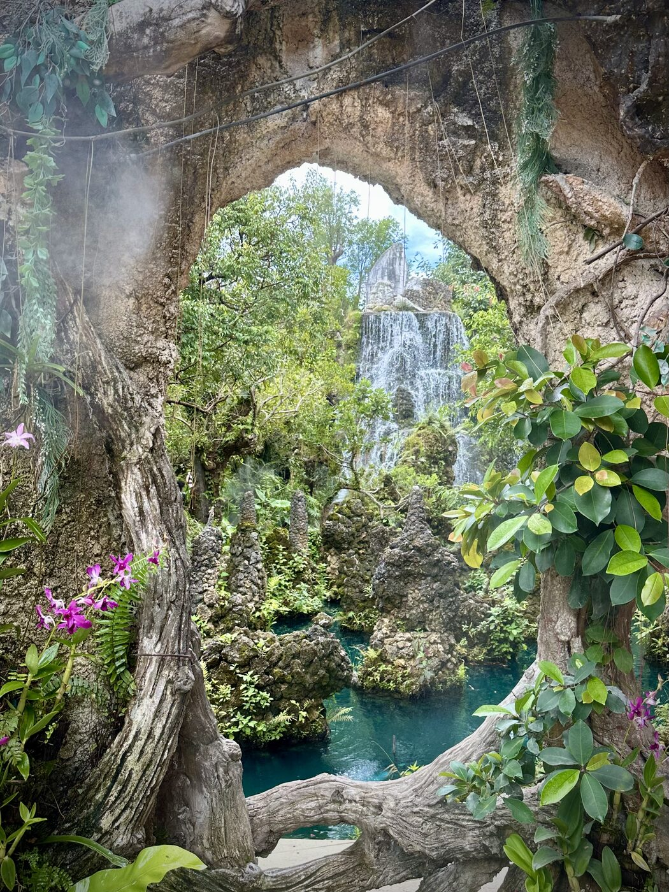
Chiang Mai, Thailand Hallstatt, Austria
Hallstatt, Austria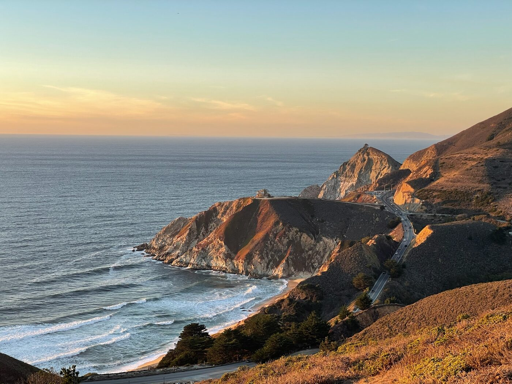
Pacific Coast Highway, CA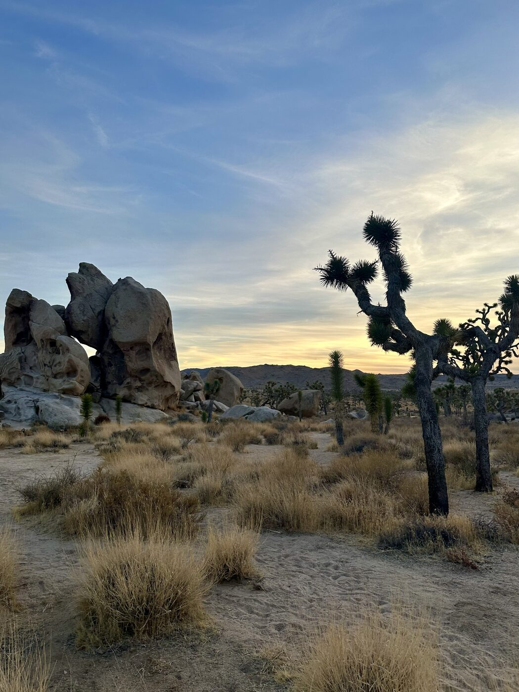
Joshua Tree, CA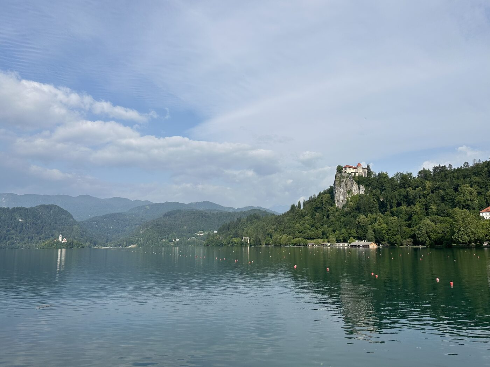
Lake Bled, Slovenia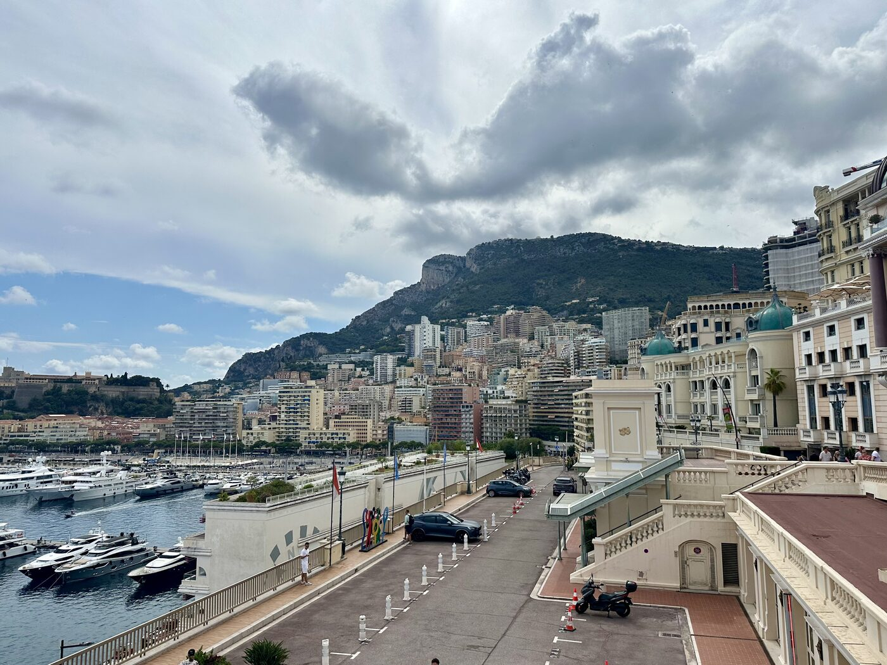
Monaco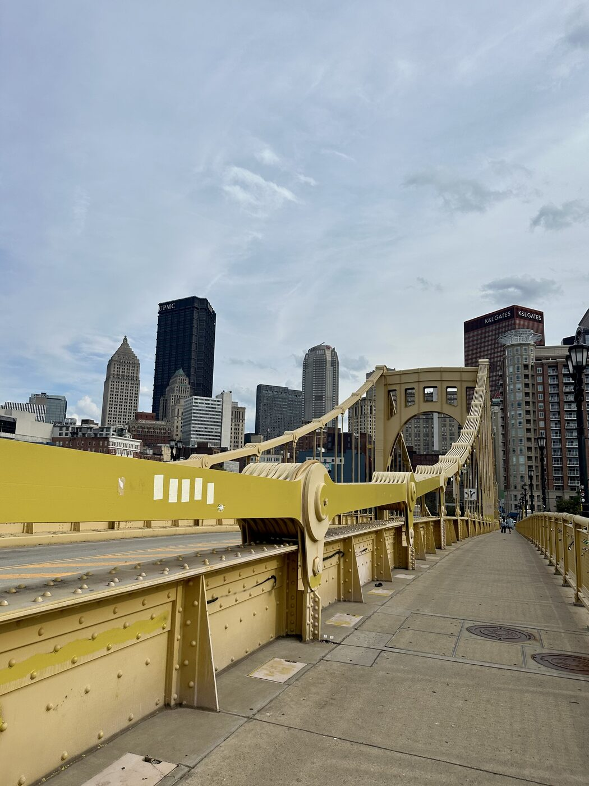
Pittsburgh, PA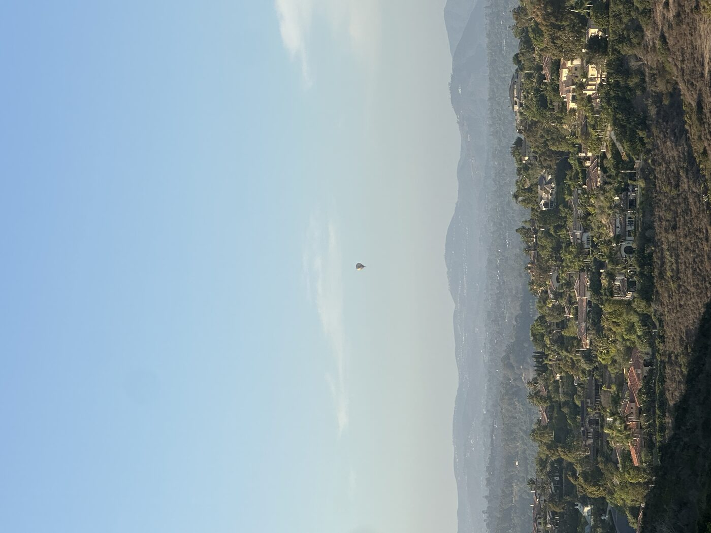
San Diego, CA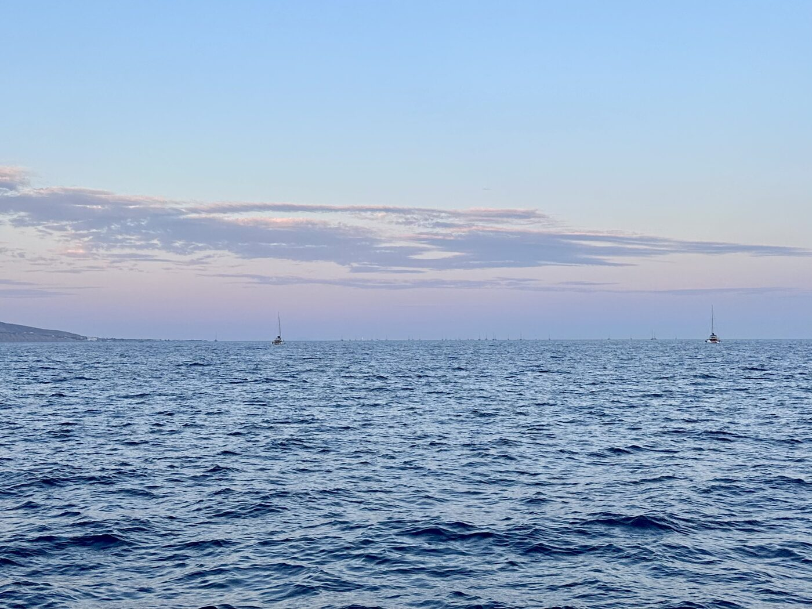
Santorini, Greece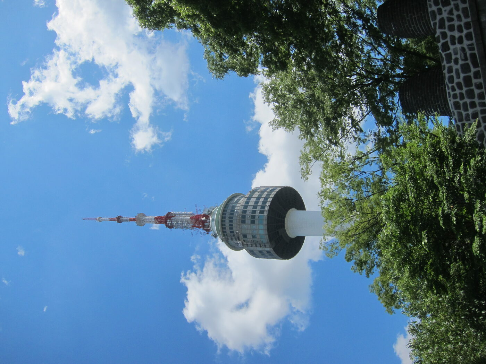
Seoul, S. Korea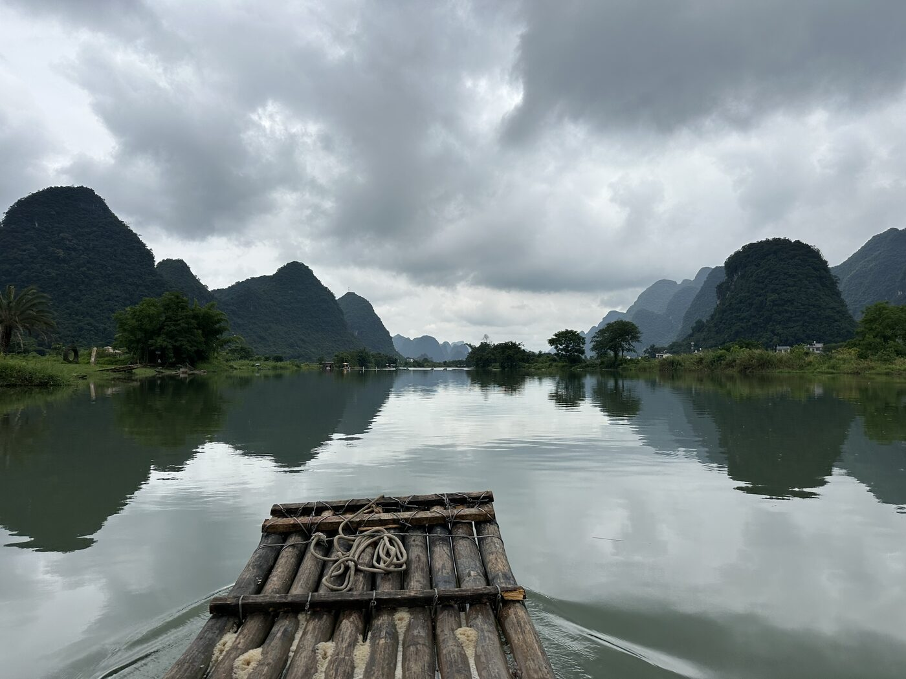
Yangshuo, China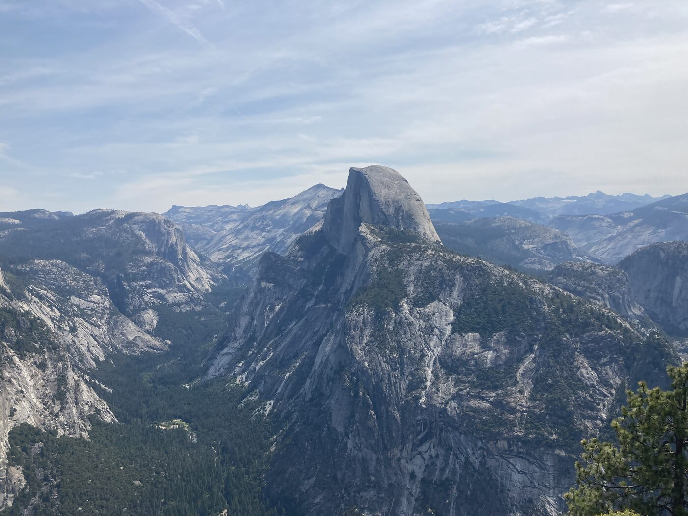
Yosemite, CA